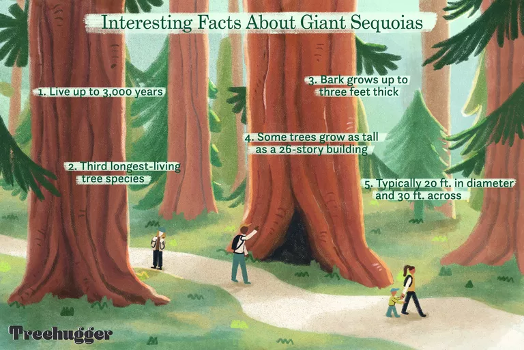
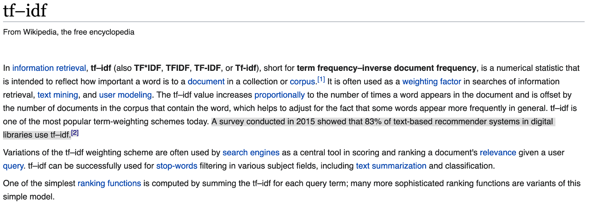

Chapter 7 - English text preprocessing basics - and applications
Contents
Chapter 7 - English text preprocessing basics - and applications#
2023 April 21

Unstructured text - text you find in the wild in books and websites - is generally not amenable to analysis. Before it can be analyzed, the text needs to be standardized to a format so that Python can recognize each unit of meaning (called a “token”) as unique, no matter how many times it occurs and how it is stylized.
Although not an exhaustive list, some key steps in preprocessing text include:
Standardize text casing and spacing
Remove punctuation and special characters/symbols
Remove stop words
Stem or lemmatize: convert all non-base words to their base form
Stemming/lemmatization and stop words (and some punctuation) are language-specific. The Natural Language ToolKit (NLTK) works for English out-of-the-box, but you’ll need different code to work with other languages. Some languages (e.g. Chinese) also require segmentation: artificially inserting spaces between words. If you want to do text pre-processing for other languages, please let us know and we can help!
# Ensure you have the proper nltk modules
import nltk
nltk.download('words')
nltk.download('stopwords')
nltk.download('wordnet')
nltk.download('averaged_perceptron_tagger')
nltk.download('maxent_ne_chunker')
nltk.download('omw-1.4')
/Users/evanmuzzall/opt/anaconda3/lib/python3.8/site-packages/scipy/__init__.py:146: UserWarning: A NumPy version >=1.16.5 and <1.23.0 is required for this version of SciPy (detected version 1.23.5
warnings.warn(f"A NumPy version >={np_minversion} and <{np_maxversion}"
[nltk_data] Downloading package words to
[nltk_data] /Users/evanmuzzall/nltk_data...
[nltk_data] Package words is already up-to-date!
[nltk_data] Downloading package stopwords to
[nltk_data] /Users/evanmuzzall/nltk_data...
[nltk_data] Package stopwords is already up-to-date!
[nltk_data] Downloading package wordnet to
[nltk_data] /Users/evanmuzzall/nltk_data...
[nltk_data] Package wordnet is already up-to-date!
[nltk_data] Downloading package averaged_perceptron_tagger to
[nltk_data] /Users/evanmuzzall/nltk_data...
[nltk_data] Package averaged_perceptron_tagger is already up-to-
[nltk_data] date!
[nltk_data] Downloading package maxent_ne_chunker to
[nltk_data] /Users/evanmuzzall/nltk_data...
[nltk_data] Package maxent_ne_chunker is already up-to-date!
[nltk_data] Downloading package omw-1.4 to
[nltk_data] /Users/evanmuzzall/nltk_data...
[nltk_data] Package omw-1.4 is already up-to-date!
True
from nltk.corpus import stopwords
from nltk.stem import WordNetLemmatizer
from nltk.stem.porter import PorterStemmer
from string import punctuation
import pandas as pd
import seaborn as sns
from collections import Counter
import regex as re
import os
import pandas as pd
from sklearn.feature_extraction.text import CountVectorizer, TfidfVectorizer, TfidfTransformer
import spacy
import nltk
from nltk.corpus import movie_reviews
import numpy as np
from sklearn.utils import shuffle
from sklearn.pipeline import Pipeline
from sklearn.linear_model import LogisticRegression
from sklearn.model_selection import cross_val_score, train_test_split
from sklearn.metrics import roc_curve, roc_auc_score, classification_report, accuracy_score, confusion_matrix
import warnings
warnings.filterwarnings("ignore", category = DeprecationWarning)
2023-05-17 12:25:17.887848: I tensorflow/core/platform/cpu_feature_guard.cc:193] This TensorFlow binary is optimized with oneAPI Deep Neural Network Library (oneDNN) to use the following CPU instructions in performance-critical operations: AVX2 FMA
To enable them in other operations, rebuild TensorFlow with the appropriate compiler flags.
Corpus definition: United Nations Human Rights Council Documentation#

We will select eleven .txt files from the UN HRC as our corpus, stored within the subfolder “human_rights” folder inside the main “data” directory.
These documents contain information about human rights recommendations made by member nations towards countries deemed to be in violation of the HRC.
Learn more about the UN HRC by clicking here.
Define the corpus directory#
Set the directory’s file path and print the files it contains.
# Make the directory "human_rights" inside of data
!mkdir data
!mkdir data/human_rights
mkdir: data: File exists
mkdir: data/human_rights: File exists
# If your "data" folder already exists in Colab and you want to delete it, type:
# !rm -r data
# If the "human_rights" folder already exists in Colab and you want to delete it, type:
# !rm -r data/human_rights
# Download elevent UN HRC files
# !wget -P data/human_rights/ https://raw.githubusercontent.com/EastBayEv/SSDS-TAML/main/spring2023/data/human_rights/afghanistan2014.txt
# !wget -P data/human_rights/ https://raw.githubusercontent.com/EastBayEv/SSDS-TAML/main/spring2023/data/human_rights/bangladesh2013.txt
# !wget -P data/human_rights/ https://raw.githubusercontent.com/EastBayEv/SSDS-TAML/main/spring2023/data/human_rights/cotedivoire2014.txt
# !wget -P data/human_rights/ https://raw.githubusercontent.com/EastBayEv/SSDS-TAML/main/spring2023/data/human_rights/djibouti2013.txt
# !wget -P data/human_rights/ https://raw.githubusercontent.com/EastBayEv/SSDS-TAML/main/spring2023/data/human_rights/fiji2014.txt
# !wget -P data/human_rights/ https://raw.githubusercontent.com/EastBayEv/SSDS-TAML/main/spring2023/data/human_rights/jordan2013.txt
# !wget -P data/human_rights/ https://raw.githubusercontent.com/EastBayEv/SSDS-TAML/main/spring2023/data/human_rights/kazakhstan2014.txt
# !wget -P data/human_rights/ https://raw.githubusercontent.com/EastBayEv/SSDS-TAML/main/spring2023/data/human_rights/monaco2013.txt
# !wget -P data/human_rights/ https://raw.githubusercontent.com/EastBayEv/SSDS-TAML/main/spring2023/data/human_rights/sanmarino2014.txt
# !wget -P data/human_rights/ https://raw.githubusercontent.com/EastBayEv/SSDS-TAML/main/spring2023/data/human_rights/turkmenistan2013.txt
# !wget -P data/human_rights/ https://raw.githubusercontent.com/EastBayEv/SSDS-TAML/main/spring2023/data/human_rights/tuvalu2013.txt
# Check that we have eleven files, one for each country
!ls data/human_rights/
afghanistan2014.txt fiji2014.txt sanmarino2014.txt
bangladesh2013.txt jordan2013.txt turkmenistan2013.txt
cotedivoire2014.txt kazakhstan2014.txt tuvalu2013.txt
djibouti2013.txt monaco2013.txt
import os
corpus = os.listdir('data/human_rights/')
# View the contents of this directory
corpus
['sanmarino2014.txt',
'tuvalu2013.txt',
'kazakhstan2014.txt',
'cotedivoire2014.txt',
'fiji2014.txt',
'bangladesh2013.txt',
'turkmenistan2013.txt',
'jordan2013.txt',
'monaco2013.txt',
'afghanistan2014.txt',
'djibouti2013.txt']
Store these documents in a data frame#
# Store in an empty dictionary for conversion to data frame
empty_dictionary = {}
# Loop through the folder of documents to open and read each one
for document in corpus:
with open('data/human_rights/' + document, 'r', encoding = 'utf-8') as to_open:
empty_dictionary[document] = to_open.read()
# Populate the data frame with two columns: file name and document text
human_rights = (pd.DataFrame.from_dict(empty_dictionary,
orient = 'index')
.reset_index().rename(index = str,
columns = {'index': 'file_name', 0: 'document_text'}))
View the data frame#
human_rights
| file_name | document_text | |
|---|---|---|
| 0 | sanmarino2014.txt | \n United Nations \n A/HRC/28/9 \n \n \n\n Ge... |
| 1 | tuvalu2013.txt | \n United Nations \n A/HRC/24/8 \n \n \n\n G... |
| 2 | kazakhstan2014.txt | \n United Nations \n A/HRC/28/10 \n \n \n\n G... |
| 3 | cotedivoire2014.txt | \nDistr.: General 7 July 2014 English Original... |
| 4 | fiji2014.txt | \n United Nations \n A/HRC/28/8 \n \n \n\n Ge... |
| 5 | bangladesh2013.txt | \n United Nations \n A/HRC/24/12 \n \n \n\n ... |
| 6 | turkmenistan2013.txt | \n United Nations \n A/HRC/24/3 \n \n \n\n G... |
| 7 | jordan2013.txt | \nDistr.: General 6 January 2014 \nOriginal: E... |
| 8 | monaco2013.txt | \nDistr.: General 3 January 2014 English Origi... |
| 9 | afghanistan2014.txt | \nDistr.: General 4 April 2014 \nOriginal: Eng... |
| 10 | djibouti2013.txt | \n\nDistr.: General 8 July 2013 English Origin... |
View the text of the first document#
# first thousand characters
print(human_rights['document_text'][0][:1000])
United Nations
A/HRC/28/9
General Assembly
Distr.: General
24 December 2014
Original: English
Human Rights Council
Twenty-eighth session
Agenda item 6
Universal Periodic Review
Report of the Working Group on the Universal Periodic Review*
* The annex to the present report is circulated as received.
San Marino
Contents
Paragraphs Page
Introduction ............................................................................................................. 1Ð4 3
I. Summary of the proceedings of the review process ................................................ 5Ð77 3
A. Presentation by the State under review ........................................................... 5Ð23 3
B. Interactive dialogue and responses by the State under review ........................ 24Ð77 6
II. Conclusions and/or recommendations ..................................................................... 78Ð81 13
Annex
Composition of the delegation .......
English text preprocessing#
Create a new column named “clean_text” to store the text as it is preprocessed.
What are some of the things we can do?#
These are just a few examples. How else could you improve this process?
Remove non-alphanumeric characters/punctuation
Remove digits
Remove unicode characters
Remove extra spaces
Convert to lowercase
Lemmatize (optional for now)
Take a look at the first document after each step to see if you can notice what changed.
Remember: the process will likely be different for many other natural languages, which frequently require special considerations.
Remove non-alphanumeric characters/punctuation#
# Create a new column 'clean_text' to store the text we are standardizing
human_rights['clean_text'] = human_rights['document_text'].str.replace(r'[^\w\s]', ' ', regex = True)
print(human_rights['clean_text'][0][:1000])
United Nations
A HRC 28 9
General Assembly
Distr General
24 December 2014
Original English
Human Rights Council
Twenty eighth session
Agenda item 6
Universal Periodic Review
Report of the Working Group on the Universal Periodic Review
The annex to the present report is circulated as received
San Marino
Contents
Paragraphs Page
Introduction 1Ð4 3
I Summary of the proceedings of the review process 5Ð77 3
A Presentation by the State under review 5Ð23 3
B Interactive dialogue and responses by the State under review 24Ð77 6
II Conclusions and or recommendations 78Ð81 13
Annex
Composition of the delegation
# view third column
human_rights
| file_name | document_text | clean_text | |
|---|---|---|---|
| 0 | sanmarino2014.txt | \n United Nations \n A/HRC/28/9 \n \n \n\n Ge... | \n United Nations \n A HRC 28 9 \n \n \n\n Ge... |
| 1 | tuvalu2013.txt | \n United Nations \n A/HRC/24/8 \n \n \n\n G... | \n United Nations \n A HRC 24 8 \n \n \n\n G... |
| 2 | kazakhstan2014.txt | \n United Nations \n A/HRC/28/10 \n \n \n\n G... | \n United Nations \n A HRC 28 10 \n \n \n\n G... |
| 3 | cotedivoire2014.txt | \nDistr.: General 7 July 2014 English Original... | \nDistr General 7 July 2014 English Original... |
| 4 | fiji2014.txt | \n United Nations \n A/HRC/28/8 \n \n \n\n Ge... | \n United Nations \n A HRC 28 8 \n \n \n\n Ge... |
| 5 | bangladesh2013.txt | \n United Nations \n A/HRC/24/12 \n \n \n\n ... | \n United Nations \n A HRC 24 12 \n \n \n\n ... |
| 6 | turkmenistan2013.txt | \n United Nations \n A/HRC/24/3 \n \n \n\n G... | \n United Nations \n A HRC 24 3 \n \n \n\n G... |
| 7 | jordan2013.txt | \nDistr.: General 6 January 2014 \nOriginal: E... | \nDistr General 6 January 2014 \nOriginal E... |
| 8 | monaco2013.txt | \nDistr.: General 3 January 2014 English Origi... | \nDistr General 3 January 2014 English Origi... |
| 9 | afghanistan2014.txt | \nDistr.: General 4 April 2014 \nOriginal: Eng... | \nDistr General 4 April 2014 \nOriginal Eng... |
| 10 | djibouti2013.txt | \n\nDistr.: General 8 July 2013 English Origin... | \n\nDistr General 8 July 2013 English Origin... |
Remove digits#
human_rights['clean_text'] = human_rights['clean_text'].str.replace(r'\d', ' ', regex = True)
print(human_rights['clean_text'][0][:1000])
United Nations
A HRC
General Assembly
Distr General
December
Original English
Human Rights Council
Twenty eighth session
Agenda item
Universal Periodic Review
Report of the Working Group on the Universal Periodic Review
The annex to the present report is circulated as received
San Marino
Contents
Paragraphs Page
Introduction Ð
I Summary of the proceedings of the review process Ð
A Presentation by the State under review Ð
B Interactive dialogue and responses by the State under review Ð
II Conclusions and or recommendations Ð
Annex
Composition of the delegation
Remove unicode characters such as Ð and ð#
# for more on text encodings: https://www.w3.org/International/questions/qa-what-is-encoding
human_rights['clean_text'] = human_rights['clean_text'].str.encode('ascii', 'ignore').str.decode('ascii')
print(human_rights['clean_text'][0][:1000])
United Nations
A HRC
General Assembly
Distr General
December
Original English
Human Rights Council
Twenty eighth session
Agenda item
Universal Periodic Review
Report of the Working Group on the Universal Periodic Review
The annex to the present report is circulated as received
San Marino
Contents
Paragraphs Page
Introduction
I Summary of the proceedings of the review process
A Presentation by the State under review
B Interactive dialogue and responses by the State under review
II Conclusions and or recommendations
Annex
Composition of the delegation
Remove extra spaces#
import regex as re
human_rights['clean_text'] = human_rights['clean_text'].str.replace(r'\s+', ' ', regex = True)
print(human_rights['clean_text'][0][:1000])
United Nations A HRC General Assembly Distr General December Original English Human Rights Council Twenty eighth session Agenda item Universal Periodic Review Report of the Working Group on the Universal Periodic Review The annex to the present report is circulated as received San Marino Contents Paragraphs Page Introduction I Summary of the proceedings of the review process A Presentation by the State under review B Interactive dialogue and responses by the State under review II Conclusions and or recommendations Annex Composition of the delegation Introduction The Working Group on the Universal Periodic Review established in accordance with Human Rights Council resolution of June held its twentieth session from October to November The review of San Marino was held at the th meeting on October The delegation of San Marino was headed by Pasquale Valentini Minister for Foreign Affairs At its th meeting held on October the Working Group adopted the report on San Marino On January the Hu
Convert to lowercase#
human_rights['clean_text'] = human_rights['clean_text'].str.lower()
print(human_rights['clean_text'][0][:1000])
united nations a hrc general assembly distr general december original english human rights council twenty eighth session agenda item universal periodic review report of the working group on the universal periodic review the annex to the present report is circulated as received san marino contents paragraphs page introduction i summary of the proceedings of the review process a presentation by the state under review b interactive dialogue and responses by the state under review ii conclusions and or recommendations annex composition of the delegation introduction the working group on the universal periodic review established in accordance with human rights council resolution of june held its twentieth session from october to november the review of san marino was held at the th meeting on october the delegation of san marino was headed by pasquale valentini minister for foreign affairs at its th meeting held on october the working group adopted the report on san marino on january the hu
Lemmatize#
# !python -m spacy download en_core_web_sm
# !python -m spacy download en_core_web_lg
nlp = spacy.load('en_core_web_sm')
human_rights['clean_text'] = human_rights['clean_text'].apply(lambda row: ' '.join([w.lemma_ for w in nlp(row)]))
# print(human_rights['clean_text'][0])
View the updated data frame#
human_rights
| file_name | document_text | clean_text | |
|---|---|---|---|
| 0 | sanmarino2014.txt | \n United Nations \n A/HRC/28/9 \n \n \n\n Ge... | united nations a hrc general assembly distr ... |
| 1 | tuvalu2013.txt | \n United Nations \n A/HRC/24/8 \n \n \n\n G... | united nations a hrc general assembly distr ... |
| 2 | kazakhstan2014.txt | \n United Nations \n A/HRC/28/10 \n \n \n\n G... | united nations a hrc general assembly distr ... |
| 3 | cotedivoire2014.txt | \nDistr.: General 7 July 2014 English Original... | distr general july english original english ... |
| 4 | fiji2014.txt | \n United Nations \n A/HRC/28/8 \n \n \n\n Ge... | united nations a hrc general assembly distr ... |
| 5 | bangladesh2013.txt | \n United Nations \n A/HRC/24/12 \n \n \n\n ... | united nations a hrc general assembly distr ... |
| 6 | turkmenistan2013.txt | \n United Nations \n A/HRC/24/3 \n \n \n\n G... | united nations a hrc general assembly distr ... |
| 7 | jordan2013.txt | \nDistr.: General 6 January 2014 \nOriginal: E... | distr general january original english gener... |
| 8 | monaco2013.txt | \nDistr.: General 3 January 2014 English Origi... | distr general january english original engli... |
| 9 | afghanistan2014.txt | \nDistr.: General 4 April 2014 \nOriginal: Eng... | distr general april original english general... |
| 10 | djibouti2013.txt | \n\nDistr.: General 8 July 2013 English Origin... | distr general july english original english ... |
Exercises - redwoods webscraping#
This also works with data scraped from the web. Below is very brief BeautifulSoup example to save the contents of the Sequoioideae (redwood trees) Wikipedia page in a variable named text.
Read through the code below
Practice by repeating for a webpage of your choice

# import necessary libraries
from bs4 import BeautifulSoup
import requests
import regex as re
import nltk
Three variables will get you started#
url- define the URL to be scrapedresponse- perform the get request on the URLsoup- create the soup object so we can parse the html
url = "https://en.wikipedia.org/wiki/Sequoioideae"
response = requests.get(url)
soup = BeautifulSoup(response.text, 'html')
Get the text#
HTML (hypertext markup language) is used to structure a webpage and the content it contains, including text.
Below is a handy for loop that finds all everything within paragraph <p>, or paragraph tags.
# save in an empty string
text = ""
for paragraph in soup.find_all('p'):
text += paragraph.text
print(text)
Sequoioideae, popularly known as redwoods, is a subfamily of coniferous trees within the family Cupressaceae. It includes the largest and tallest trees in the world.
The three redwood subfamily genera are Sequoia from coastal California and Oregon, Sequoiadendron from California's Sierra Nevada, and Metasequoia in China. The redwood species contains the largest and tallest trees in the world. These trees can live for thousands of years. Threats include logging, fire suppression,[2] climate change, illegal marijuana cultivation, and burl poaching.[3][4][5]
Only two of the genera, Sequoia and Sequoiadendron, are known for massive trees. Trees of Metasequoia, from the single living species Metasequoia glyptostroboides, are deciduous, grow much smaller (although are still large compared to most other trees) and can live in colder climates.[citation needed]
Multiple studies of both morphological and molecular characters have strongly supported the assertion that the Sequoioideae are monophyletic.[6][7][8][9]
Most modern phylogenies place Sequoia as sister to Sequoiadendron and Metasequoia as the out-group.[7][9][10] However, Yang et al. went on to investigate the origin of a peculiar genetic artifact of the Sequoioideae—the polyploidy of Sequoia—and generated a notable exception that calls into question the specifics of this relative consensus.[9]
A 2006 paper based on non-molecular evidence suggested the following relationship among extant species:[11]
M. glyptostroboides (dawn redwood)
S. sempervirens (coast redwood)
S. giganteum (giant sequoia)
Taxodioideae
A 2021 study using molecular evidence found the same relationships among Sequoioideae species, but found Sequoioideae to be the sister group to the Athrotaxidoideae (a superfamily presently known only from Tasmania) rather than to Taxodioideae. Sequoioideae and Athrotaxidoideae are thought to have diverged from each other during the Jurassic.[12]
Reticulate evolution refers to the origination of a taxon through the merging of ancestor lineages.
Polyploidy has come to be understood as quite common in plants—with estimates ranging from 47% to 100% of flowering plants and extant ferns having derived from ancient polyploidy.[13] Within the gymnosperms however it is quite rare. Sequoia sempervirens is hexaploid (2n= 6x= 66). To investigate the origins of this polyploidy Yang et al. used two single copy nuclear genes, LFY and NLY, to generate phylogenetic trees. Other researchers have had success with these genes in similar studies on different taxa.[9]
Several hypotheses have been proposed to explain the origin of Sequoia's polyploidy: allopolyploidy by hybridization between Metasequoia and some probably extinct taxodiaceous plant; Metasequoia and Sequoiadendron, or ancestors of the two genera, as the parental species of Sequoia; and autohexaploidy, autoallohexaploidy, or segmental allohexaploidy.[citation needed]
Yang et al. found that Sequoia was clustered with Metasequoia in the tree generated using the LFY gene but with Sequoiadendron in the tree generated with the NLY gene. Further analysis strongly supported the hypothesis that Sequoia was the result of a hybridization event involving Metasequoia and Sequoiadendron. Thus, Yang et al. hypothesize that the inconsistent relationships among Metasequoia, Sequoia, and Sequoiadendron could be a sign of reticulate evolution by hybrid speciation (in which two species hybridize and give rise to a third) among the three genera. However, the long evolutionary history of the three genera (the earliest fossil remains being from the Jurassic) make resolving the specifics of when and how Sequoia originated once and for all a difficult matter—especially since it in part depends on an incomplete fossil record.[10]
Sequoioideae is an ancient taxon, with the oldest described Sequoioideae species, Sequoia jeholensis, recovered from Jurassic deposits.[14] A genus Medulloprotaxodioxylon, reported from the late Triassic of China supports the idea of a Norian origin.[1]
The fossil record shows a massive expansion of range in the Cretaceous and dominance of the Arcto-Tertiary Geoflora, especially in northern latitudes. Genera of Sequoioideae were found in the Arctic Circle, Europe, North America, and throughout Asia and Japan.[15] A general cooling trend beginning in the late Eocene and Oligocene reduced the northern ranges of the Sequoioideae, as did subsequent ice ages.[16] Evolutionary adaptations to ancient environments persist in all three species despite changing climate, distribution, and associated flora, especially the specific demands of their reproduction ecology that ultimately forced each of the species into refugial ranges where they could survive.[citation needed]The entire subfamily is endangered. The IUCN Red List Category & Criteria assesses Sequoia sempervirens as Endangered (A2acd), Sequoiadendron giganteum as Endangered (B2ab) and Metasequoia glyptostroboides as Endangered (B1ab).
New World Species:
New World Species:
Regular expressions#
Regular expressions are sequences of characters and symbols that represent search patterns in text - and are generally quite useful.
Check out the tutorial and cheatsheet to find out what the below symbols mean and write your own code. Better yet you could write a pattern to do them simultaneously in one line/less lines of code in some cases!
text = re.sub(r'\[[0-9]*\]',' ',text)
text = re.sub(r'\s+',' ',text)
text = re.sub(r'\d',' ',text)
text = re.sub(r'[^\w\s]','',text)
text = text.lower()
text = re.sub(r'\s+',' ',text)
print(text)
sequoioideae popularly known as redwoods is a subfamily of coniferous trees within the family cupressaceae it includes the largest and tallest trees in the world the three redwood subfamily genera are sequoia from coastal california and oregon sequoiadendron from californias sierra nevada and metasequoia in china the redwood species contains the largest and tallest trees in the world these trees can live for thousands of years threats include logging fire suppression climate change illegal marijuana cultivation and burl poaching only two of the genera sequoia and sequoiadendron are known for massive trees trees of metasequoia from the single living species metasequoia glyptostroboides are deciduous grow much smaller although are still large compared to most other trees and can live in colder climatescitation needed multiple studies of both morphological and molecular characters have strongly supported the assertion that the sequoioideae are monophyletic most modern phylogenies place sequoia as sister to sequoiadendron and metasequoia as the outgroup however yang et al went on to investigate the origin of a peculiar genetic artifact of the sequoioideaethe polyploidy of sequoiaand generated a notable exception that calls into question the specifics of this relative consensus a paper based on nonmolecular evidence suggested the following relationship among extant species m glyptostroboides dawn redwood s sempervirens coast redwood s giganteum giant sequoia taxodioideae a study using molecular evidence found the same relationships among sequoioideae species but found sequoioideae to be the sister group to the athrotaxidoideae a superfamily presently known only from tasmania rather than to taxodioideae sequoioideae and athrotaxidoideae are thought to have diverged from each other during the jurassic reticulate evolution refers to the origination of a taxon through the merging of ancestor lineages polyploidy has come to be understood as quite common in plantswith estimates ranging from to of flowering plants and extant ferns having derived from ancient polyploidy within the gymnosperms however it is quite rare sequoia sempervirens is hexaploid n x to investigate the origins of this polyploidy yang et al used two single copy nuclear genes lfy and nly to generate phylogenetic trees other researchers have had success with these genes in similar studies on different taxa several hypotheses have been proposed to explain the origin of sequoias polyploidy allopolyploidy by hybridization between metasequoia and some probably extinct taxodiaceous plant metasequoia and sequoiadendron or ancestors of the two genera as the parental species of sequoia and autohexaploidy autoallohexaploidy or segmental allohexaploidycitation needed yang et al found that sequoia was clustered with metasequoia in the tree generated using the lfy gene but with sequoiadendron in the tree generated with the nly gene further analysis strongly supported the hypothesis that sequoia was the result of a hybridization event involving metasequoia and sequoiadendron thus yang et al hypothesize that the inconsistent relationships among metasequoia sequoia and sequoiadendron could be a sign of reticulate evolution by hybrid speciation in which two species hybridize and give rise to a third among the three genera however the long evolutionary history of the three genera the earliest fossil remains being from the jurassic make resolving the specifics of when and how sequoia originated once and for all a difficult matterespecially since it in part depends on an incomplete fossil record sequoioideae is an ancient taxon with the oldest described sequoioideae species sequoia jeholensis recovered from jurassic deposits a genus medulloprotaxodioxylon reported from the late triassic of china supports the idea of a norian origin the fossil record shows a massive expansion of range in the cretaceous and dominance of the arctotertiary geoflora especially in northern latitudes genera of sequoioideae were found in the arctic circle europe north america and throughout asia and japan a general cooling trend beginning in the late eocene and oligocene reduced the northern ranges of the sequoioideae as did subsequent ice ages evolutionary adaptations to ancient environments persist in all three species despite changing climate distribution and associated flora especially the specific demands of their reproduction ecology that ultimately forced each of the species into refugial ranges where they could survivecitation neededthe entire subfamily is endangered the iucn red list category criteria assesses sequoia sempervirens as endangered a acd sequoiadendron giganteum as endangered b ab and metasequoia glyptostroboides as endangered b ab new world species new world species
Unsupervised learning with TfidfVectorizer()#
Remember CountVectorizer() for creating Bag of Word models? We can extend this idea of counting words, to counting unique words within a document relative to the rest of the corpus with TfidfVectorizer(). Each row will still be a document in the document term matrix and each column will still be a linguistic feature, but the cells will now be populated by the word uniqueness weights instead of frequencies. Remember that:
For TF-IDF sparse matrices:
A value closer to 1 indicate that a feature is more relevant to a particular document.
A value closer to 0 indicates that that feature is less/not relevant to that document.


from sklearn.feature_extraction.text import TfidfVectorizer
tf_vectorizer = TfidfVectorizer(ngram_range = (1, 3),
stop_words = 'english',
max_df = 0.50
)
tf_sparse = tf_vectorizer.fit_transform(human_rights['clean_text'])
tf_sparse.shape
(11, 84181)
print(tf_sparse)
(0, 39182) 0.004856846879037771
(0, 31574) 0.004856846879037771
(0, 50165) 0.004856846879037771
(0, 79743) 0.004856846879037771
(0, 46164) 0.004856846879037771
(0, 70574) 0.004856846879037771
(0, 67048) 0.004856846879037771
(0, 48393) 0.004856846879037771
(0, 55413) 0.004856846879037771
(0, 5657) 0.004856846879037771
(0, 2036) 0.004856846879037771
(0, 18508) 0.004856846879037771
(0, 4238) 0.004856846879037771
(0, 49342) 0.004856846879037771
(0, 2719) 0.004856846879037771
(0, 39331) 0.004856846879037771
(0, 7341) 0.004856846879037771
(0, 80381) 0.004856846879037771
(0, 49382) 0.004856846879037771
(0, 2723) 0.004856846879037771
(0, 43326) 0.004856846879037771
(0, 20394) 0.004856846879037771
(0, 27591) 0.004856846879037771
(0, 53796) 0.004856846879037771
(0, 74877) 0.004856846879037771
: :
(10, 23861) 0.004813404453682774
(10, 53868) 0.005386104036626412
(10, 61809) 0.005386104036626412
(10, 11732) 0.006124442213746767
(10, 52233) 0.006124442213746767
(10, 32036) 0.00869094964616284
(10, 38685) 0.00869094964616284
(10, 48447) 0.012248884427493533
(10, 64367) 0.00869094964616284
(10, 28795) 0.004813404453682774
(10, 66492) 0.03231662421975847
(10, 62562) 0.005386104036626412
(10, 30131) 0.004813404453682774
(10, 79340) 0.006124442213746767
(10, 4251) 0.00434547482308142
(10, 27107) 0.00434547482308142
(10, 57250) 0.026072848938488522
(10, 60838) 0.030418323761569943
(10, 70491) 0.026072848938488522
(10, 76162) 0.00434547482308142
(10, 72779) 0.005386104036626412
(10, 27613) 0.00434547482308142
(10, 28707) 0.010772208073252824
(10, 8151) 0.010772208073252824
(10, 18289) 0.00869094964616284
Convert the tfidf sparse matrix to data frame#
tfidf_df = pd.DataFrame(tf_sparse.todense(), columns = tf_vectorizer.get_feature_names_out())
tfidf_df
| abasi | abasi desk | abasi desk officer | abdi | abdi ismael | abdi ismael hersi | abdou | abdou prsident | abdou prsident la | abduction | ... | zone | zone inclusive | zone inclusive education | zone senegal | zone senegal make | zone social | zone social benefit | zouon | zouon bi | zouon bi tidou | |
|---|---|---|---|---|---|---|---|---|---|---|---|---|---|---|---|---|---|---|---|---|---|
| 0 | 0.000000 | 0.000000 | 0.000000 | 0.000000 | 0.000000 | 0.000000 | 0.000000 | 0.000000 | 0.000000 | 0.000000 | ... | 0.000000 | 0.000000 | 0.000000 | 0.000000 | 0.000000 | 0.000000 | 0.000000 | 0.000000 | 0.000000 | 0.000000 |
| 1 | 0.000000 | 0.000000 | 0.000000 | 0.000000 | 0.000000 | 0.000000 | 0.000000 | 0.000000 | 0.000000 | 0.000000 | ... | 0.000000 | 0.000000 | 0.000000 | 0.000000 | 0.000000 | 0.000000 | 0.000000 | 0.000000 | 0.000000 | 0.000000 |
| 2 | 0.000000 | 0.000000 | 0.000000 | 0.000000 | 0.000000 | 0.000000 | 0.000000 | 0.000000 | 0.000000 | 0.004509 | ... | 0.011473 | 0.006711 | 0.006711 | 0.000000 | 0.000000 | 0.006711 | 0.006711 | 0.000000 | 0.000000 | 0.000000 |
| 3 | 0.000000 | 0.000000 | 0.000000 | 0.000000 | 0.000000 | 0.000000 | 0.000000 | 0.000000 | 0.000000 | 0.000000 | ... | 0.000000 | 0.000000 | 0.000000 | 0.000000 | 0.000000 | 0.000000 | 0.000000 | 0.006249 | 0.006249 | 0.006249 |
| 4 | 0.000000 | 0.000000 | 0.000000 | 0.000000 | 0.000000 | 0.000000 | 0.000000 | 0.000000 | 0.000000 | 0.000000 | ... | 0.000000 | 0.000000 | 0.000000 | 0.000000 | 0.000000 | 0.000000 | 0.000000 | 0.000000 | 0.000000 | 0.000000 |
| 5 | 0.000000 | 0.000000 | 0.000000 | 0.000000 | 0.000000 | 0.000000 | 0.000000 | 0.000000 | 0.000000 | 0.011198 | ... | 0.000000 | 0.000000 | 0.000000 | 0.000000 | 0.000000 | 0.000000 | 0.000000 | 0.000000 | 0.000000 | 0.000000 |
| 6 | 0.000000 | 0.000000 | 0.000000 | 0.000000 | 0.000000 | 0.000000 | 0.000000 | 0.000000 | 0.000000 | 0.000000 | ... | 0.006296 | 0.000000 | 0.000000 | 0.007365 | 0.007365 | 0.000000 | 0.000000 | 0.000000 | 0.000000 | 0.000000 |
| 7 | 0.000000 | 0.000000 | 0.000000 | 0.000000 | 0.000000 | 0.000000 | 0.000000 | 0.000000 | 0.000000 | 0.004721 | ... | 0.000000 | 0.000000 | 0.000000 | 0.000000 | 0.000000 | 0.000000 | 0.000000 | 0.000000 | 0.000000 | 0.000000 |
| 8 | 0.000000 | 0.000000 | 0.000000 | 0.000000 | 0.000000 | 0.000000 | 0.000000 | 0.000000 | 0.000000 | 0.000000 | ... | 0.000000 | 0.000000 | 0.000000 | 0.000000 | 0.000000 | 0.000000 | 0.000000 | 0.000000 | 0.000000 | 0.000000 |
| 9 | 0.007608 | 0.007608 | 0.007608 | 0.000000 | 0.000000 | 0.000000 | 0.000000 | 0.000000 | 0.000000 | 0.005111 | ... | 0.000000 | 0.000000 | 0.000000 | 0.000000 | 0.000000 | 0.000000 | 0.000000 | 0.000000 | 0.000000 | 0.000000 |
| 10 | 0.000000 | 0.000000 | 0.000000 | 0.007165 | 0.007165 | 0.007165 | 0.007165 | 0.007165 | 0.007165 | 0.000000 | ... | 0.000000 | 0.000000 | 0.000000 | 0.000000 | 0.000000 | 0.000000 | 0.000000 | 0.000000 | 0.000000 | 0.000000 |
11 rows × 84181 columns
View 20 highest weighted words#
tfidf_df.max().sort_values(ascending = False).head(n = 20)
monaco 0.720348
tuvalu 0.639251
kazakhstan 0.615483
fiji 0.582410
turkmenistan 0.578904
san 0.553681
jordan 0.491254
san marino 0.456544
marino 0.456544
divoire 0.340046
te divoire 0.340046
te 0.306989
elimination violence 0.253620
elimination violence woman 0.253620
djiboutis 0.250777
reconciliation 0.245711
fgm 0.195982
afghan 0.190201
bangladeshs 0.183356
violence woman law 0.182593
dtype: float64
Add country name to tfidf_df#
This way, we will know which document is relative to which country.
# wrangle the country names from the human_rights data frame
countries = human_rights['file_name'].str.slice(stop = -8)
countries = list(countries)
countries
['sanmarino',
'tuvalu',
'kazakhstan',
'cotedivoire',
'fiji',
'bangladesh',
'turkmenistan',
'jordan',
'monaco',
'afghanistan',
'djibouti']
tfidf_df['COUNTRY'] = countries
tfidf_df
| abasi | abasi desk | abasi desk officer | abdi | abdi ismael | abdi ismael hersi | abdou | abdou prsident | abdou prsident la | abduction | ... | zone inclusive | zone inclusive education | zone senegal | zone senegal make | zone social | zone social benefit | zouon | zouon bi | zouon bi tidou | COUNTRY | |
|---|---|---|---|---|---|---|---|---|---|---|---|---|---|---|---|---|---|---|---|---|---|
| 0 | 0.000000 | 0.000000 | 0.000000 | 0.000000 | 0.000000 | 0.000000 | 0.000000 | 0.000000 | 0.000000 | 0.000000 | ... | 0.000000 | 0.000000 | 0.000000 | 0.000000 | 0.000000 | 0.000000 | 0.000000 | 0.000000 | 0.000000 | sanmarino |
| 1 | 0.000000 | 0.000000 | 0.000000 | 0.000000 | 0.000000 | 0.000000 | 0.000000 | 0.000000 | 0.000000 | 0.000000 | ... | 0.000000 | 0.000000 | 0.000000 | 0.000000 | 0.000000 | 0.000000 | 0.000000 | 0.000000 | 0.000000 | tuvalu |
| 2 | 0.000000 | 0.000000 | 0.000000 | 0.000000 | 0.000000 | 0.000000 | 0.000000 | 0.000000 | 0.000000 | 0.004509 | ... | 0.006711 | 0.006711 | 0.000000 | 0.000000 | 0.006711 | 0.006711 | 0.000000 | 0.000000 | 0.000000 | kazakhstan |
| 3 | 0.000000 | 0.000000 | 0.000000 | 0.000000 | 0.000000 | 0.000000 | 0.000000 | 0.000000 | 0.000000 | 0.000000 | ... | 0.000000 | 0.000000 | 0.000000 | 0.000000 | 0.000000 | 0.000000 | 0.006249 | 0.006249 | 0.006249 | cotedivoire |
| 4 | 0.000000 | 0.000000 | 0.000000 | 0.000000 | 0.000000 | 0.000000 | 0.000000 | 0.000000 | 0.000000 | 0.000000 | ... | 0.000000 | 0.000000 | 0.000000 | 0.000000 | 0.000000 | 0.000000 | 0.000000 | 0.000000 | 0.000000 | fiji |
| 5 | 0.000000 | 0.000000 | 0.000000 | 0.000000 | 0.000000 | 0.000000 | 0.000000 | 0.000000 | 0.000000 | 0.011198 | ... | 0.000000 | 0.000000 | 0.000000 | 0.000000 | 0.000000 | 0.000000 | 0.000000 | 0.000000 | 0.000000 | bangladesh |
| 6 | 0.000000 | 0.000000 | 0.000000 | 0.000000 | 0.000000 | 0.000000 | 0.000000 | 0.000000 | 0.000000 | 0.000000 | ... | 0.000000 | 0.000000 | 0.007365 | 0.007365 | 0.000000 | 0.000000 | 0.000000 | 0.000000 | 0.000000 | turkmenistan |
| 7 | 0.000000 | 0.000000 | 0.000000 | 0.000000 | 0.000000 | 0.000000 | 0.000000 | 0.000000 | 0.000000 | 0.004721 | ... | 0.000000 | 0.000000 | 0.000000 | 0.000000 | 0.000000 | 0.000000 | 0.000000 | 0.000000 | 0.000000 | jordan |
| 8 | 0.000000 | 0.000000 | 0.000000 | 0.000000 | 0.000000 | 0.000000 | 0.000000 | 0.000000 | 0.000000 | 0.000000 | ... | 0.000000 | 0.000000 | 0.000000 | 0.000000 | 0.000000 | 0.000000 | 0.000000 | 0.000000 | 0.000000 | monaco |
| 9 | 0.007608 | 0.007608 | 0.007608 | 0.000000 | 0.000000 | 0.000000 | 0.000000 | 0.000000 | 0.000000 | 0.005111 | ... | 0.000000 | 0.000000 | 0.000000 | 0.000000 | 0.000000 | 0.000000 | 0.000000 | 0.000000 | 0.000000 | afghanistan |
| 10 | 0.000000 | 0.000000 | 0.000000 | 0.007165 | 0.007165 | 0.007165 | 0.007165 | 0.007165 | 0.007165 | 0.000000 | ... | 0.000000 | 0.000000 | 0.000000 | 0.000000 | 0.000000 | 0.000000 | 0.000000 | 0.000000 | 0.000000 | djibouti |
11 rows × 84182 columns
Examine unique words by each document/country#
Change the country names to view their highest rated terms.
country = tfidf_df[tfidf_df['COUNTRY'] == 'tuvalu']
country.max(numeric_only = True).sort_values(ascending = False).head(20)
tuvalu 0.639251
safe drinking water 0.094018
safe drinking 0.094018
water sanitation 0.093357
sanitation 0.092709
rapporteur human right 0.090329
human right safe 0.090329
drinking 0.088689
drinking water 0.088689
drinking water sanitation 0.078348
special rapporteur human 0.077210
rapporteur human 0.077210
island 0.077210
climate change 0.073125
right safe 0.073125
right safe drinking 0.073125
national strategic development 0.069484
constraint 0.065350
national strategic 0.065331
strategic development plan 0.059392
dtype: float64
UN HRC text analysis - what next?#
What next? Keep in mind that we have not even begun to consider named entities and parts of speech. What problems immediately jump out from the above examples, such as with the number and uniqueness of country names?
The next two chapters 8 and 9 introduce powerful text preprocessing and analysis techniques. Read ahead to see how we can handle roadblocks such as these.
Sentiment analysis#
Sentiment analysis is the contextual mining of text data that elicits abstract information in source materials to determine if data are positive, negative, or neutral.

Download the nltk built movie reviews dataset#
import nltk
from nltk.corpus import movie_reviews
nltk.download("movie_reviews")
[nltk_data] Downloading package movie_reviews to
[nltk_data] /Users/evanmuzzall/nltk_data...
[nltk_data] Package movie_reviews is already up-to-date!
True
Define x (reviews) and y (judgements) variables#
# Extract our x (reviews) and y (judgements) variables
reviews = [movie_reviews.raw(fileid) for fileid in movie_reviews.fileids()]
judgements = [movie_reviews.categories(fileid)[0] for fileid in movie_reviews.fileids()]
# Save in a dataframe
movies = pd.DataFrame({"Reviews" : reviews,
"Judgements" : judgements})
movies.head()
| Reviews | Judgements | |
|---|---|---|
| 0 | plot : two teen couples go to a church party ,... | neg |
| 1 | the happy bastard's quick movie review \ndamn ... | neg |
| 2 | it is movies like these that make a jaded movi... | neg |
| 3 | " quest for camelot " is warner bros . ' firs... | neg |
| 4 | synopsis : a mentally unstable man undergoing ... | neg |
movies.shape
(2000, 2)
Shuffle the reviews#
import numpy as np
from sklearn.utils import shuffle
x, y = shuffle(np.array(movies.Reviews), np.array(movies.Judgements), random_state = 1)
# change x[0] and y[0] to see different reviews
x[3], print("Human review was:", y[3])
Human review was: pos
('confession time : i have never , ever seen gone with the wind . \ni don\'t know why , really . \nhaven\'t wanted to check it out on video , haven\'t been at home the nights it was on network tv , and it was too far to drive the last time it was on the big-screen . \nso right up front , i\'ll admit that i don\'t know what the heck i\'m talking about , but here goes . . . \nis titanic the gone with the wind of the 1990\'s ? \nmaybe that\'s going a little bit too far . \nas good a job as leonardo dicaprio and kate winslet do in this movie , they\'re no clark gable and vivien leigh . \nbut . . . \nthe parallels are there . \ngwtw was the first movie to take real advantage of the most revolutionary technology available -- technicolor . \ntitanic takes revolutionary steps forward in seamlessly integrating computer graphic design with actors . \ngwtw places america\'s greatest tragedy in the background of a classic love story , titanic does the same with the atlantic\'s most legendary tragedy . \nthey both have strong-willed redheaded heroines , they both exploit the class differences between the aristocracy and the slaves/steerage bums , they were both incredibly expensive and popular . . . \nok , maybe that\'s not enough parallels . \nso titanic\'s not in gwtw\'s league . \nno matter . \ntitanic is a great movie in its own right , complete with spills , thrills and ( especially ) chills . \nmuch has been made of the humongous cost of the production , and all of the care than went into making the huge luxury liner come alive again . \nthe money was obviously well-spent . \nthe costumes look great , the sets look great , the cgi graphics look great . \ni especially liked the expensive little touches , like spending tons of money on authentic titanic china only to break it all on the floor as the ship sinks . \nbut writer/director/producer james cameron\'s real challenge in writing/directing/ producing titanic wasn\'t just costuming and set design and special effects . \ncameron\'s major headache was keeping the audience interested in a tale where everybody knows the ending going in . \nhe succeeds masterfully . \ncameron does two things that work incredibly well . \nfirst , he shows us modern-day salvage operations on titanic ( that\'s just " titanic " , not " the titanic " , mind you ) . \nthe first glimpse we get of titanic is the ship in its present state , corroding slowly away under the hammering pressure of the north atlantic , from the window of a minisub piloted by treasure hunter brock lovett ( bill paxton ) . \ntelevision coverage of the exploration of titanic intrigues 101-year-old rose calvert ( gloria stuart ) , who survived the wreck in 1912 . \nstuart does a phenomenal job in a brief role , narrating the story of her experience to a stunned paxton and his roughneck crew . \nsecondly , cameron keeps the storyline focused almost exclusively on the rose character , and the romantic triangle between rose ( winslet ) , her bastard millionaire fiancee cal hockley ( billy zane ) and the irrepressible young artist jack daswon ( dicaprio ) . \nthe way that big-budget disaster movies usually go wrong is to have an all-star cast , so we see the impact of the disaster on a wide group of people . \ncameron wisely chooses to stick with rose and jack , while paying scant heed to the celebrities on board . \nthe supporting cast is professional , but mostly anonymous -- other than kathy bates as the unsinkable molly brown , there\'s no moment when you stop and say , oh , yeah , i know him , what\'s he been in . \n ( although i would like to have seen colm meaney in a white star uniform , or even as the ill-fated engineer . ) \nthe love story itself is rather conventional . \ni think some reviewers found it weak , and that may be a fair criticism . \nthe performances are the key here . \nzane has the meatiest part in the movie , and he plays the arrogant , condescending steel millionaire to the hilt . \nhe\'s smooth , he looks great in a tuxedo , and he\'s a convincing enough jerk that the winslet-dicaprio relationship looks plausible . \nat the moment when he sees a little girl too frightened to get aboard a lifeboat , you can hear the wheels in his mind turning , saying not " can i save this little girl ? " , \nbut " can she help me get on a lifeboat ? " \ndicaprio is a revelation . \ni hadn\'t seen him before in anything , and didn\'t know what the heck to expect , really . \n ( honestly , i expected a bad irish accent , but cameron evidently decided that was a bad idea , so dicaprio plays a poor american artist who wins a ticket in a poker game . ) \ndicaprio exhibits an infectious joy at being alive , and being on the titanic , that it\'s hard not to like him . \nfrom the moment that the ship leaves port until it hits the iceberg , dicaprio has to carry the movie and keep our interest , and he never falters . \nwinslet\'s character grows up a lot during the movie , and so does her performance . \nat first , she\'s not required to do anything but wear period clothing and look drop-dead gorgeous . \nwe know from the narration that she\'s monstrously unhappy with her arranged marriage to zane , but there isn\'t any expression of these feelings until she encounters dicaprio . \nwinslet and dicaprio develop a chemistry that manages to propel the movie along until the ship hits the iceberg . \nit\'s at that moment where winslet\'s character really comes alive . \nfaced with real danger , she drops her spoiled-rich-girl mannerisms and does a splendid job . \nas rose and jack race around the doomed ship , looking for shelter from the freezing water and cal\'s fiery temper , winslet turns in a superb acting performance , mixing courage and compassion and anger with sheer shrieking terror . \nof course , the most interesting character is the ship itself . \ncameron has clearly fallen in love with titanic , and shows her in every mood -- as a deserted wreck , down in the boiler room , up on the bridge , down in the hold , at the captain\'s table , down in steerage -- and manages to bring the great ship back from the dead . \ncameron\'s greatest gift is that he allows us to fall in love with titanic as well . \n',
None)
Pipelines - one example#
scikit-learn offers hand ways to build machine learning pipelines: https://scikit-learn.org/stable/modules/generated/sklearn.pipeline.Pipeline.html
?tfidf.transform
Object `tfidf.transform` not found.
# standard training/test split (no cross validation)
x_train, x_test, y_train, y_test = train_test_split(x, y, test_size = 0.30, random_state = 0)
# get tfidf values
tfidf = TfidfVectorizer()
tfidf.fit(x)
x_train = tfidf.transform(x_train)
x_test = tfidf.transform(x_test)
# instantiate, train, and test an logistic regression model
logit_class = LogisticRegression(solver = 'liblinear',
penalty = 'l2',
C = 1000,
random_state = 1)
model = logit_class.fit(x_train, y_train)
?LogisticRegression
# test set accuracy
model.score(x_test, y_test)
0.8216666666666667
\(k\)-fold cross-validated model#
?Pipeline
?cross_val_score
# Cross-validated model!
text_clf = Pipeline([('vect', CountVectorizer(ngram_range=(1, 3))),
('tfidf', TfidfTransformer()),
('clf', LogisticRegression(solver = 'liblinear',
penalty = 'l2',
C = 1000,
random_state = 1))
])
# for your own research, thesis, or publication
# you would select cv equal to 10 or 20
scores = cross_val_score(text_clf, x, y, cv = 10)
print(scores, np.mean(scores))
---------------------------------------------------------------------------
KeyboardInterrupt Traceback (most recent call last)
Cell In[53], line 12
2 text_clf = Pipeline([('vect', CountVectorizer(ngram_range=(1, 3))),
3 ('tfidf', TfidfTransformer()),
4 ('clf', LogisticRegression(solver = 'liblinear',
(...)
7 random_state = 1))
8 ])
10 # for your own research, thesis, or publication
11 # you would select cv equal to 10 or 20
---> 12 scores = cross_val_score(text_clf, x, y, cv = 10)
14 print(scores, np.mean(scores))
File ~/opt/anaconda3/lib/python3.8/site-packages/sklearn/model_selection/_validation.py:509, in cross_val_score(estimator, X, y, groups, scoring, cv, n_jobs, verbose, fit_params, pre_dispatch, error_score)
506 # To ensure multimetric format is not supported
507 scorer = check_scoring(estimator, scoring=scoring)
--> 509 cv_results = cross_validate(
510 estimator=estimator,
511 X=X,
512 y=y,
513 groups=groups,
514 scoring={"score": scorer},
515 cv=cv,
516 n_jobs=n_jobs,
517 verbose=verbose,
518 fit_params=fit_params,
519 pre_dispatch=pre_dispatch,
520 error_score=error_score,
521 )
522 return cv_results["test_score"]
File ~/opt/anaconda3/lib/python3.8/site-packages/sklearn/model_selection/_validation.py:267, in cross_validate(estimator, X, y, groups, scoring, cv, n_jobs, verbose, fit_params, pre_dispatch, return_train_score, return_estimator, error_score)
264 # We clone the estimator to make sure that all the folds are
265 # independent, and that it is pickle-able.
266 parallel = Parallel(n_jobs=n_jobs, verbose=verbose, pre_dispatch=pre_dispatch)
--> 267 results = parallel(
268 delayed(_fit_and_score)(
269 clone(estimator),
270 X,
271 y,
272 scorers,
273 train,
274 test,
275 verbose,
276 None,
277 fit_params,
278 return_train_score=return_train_score,
279 return_times=True,
280 return_estimator=return_estimator,
281 error_score=error_score,
282 )
283 for train, test in cv.split(X, y, groups)
284 )
286 _warn_about_fit_failures(results, error_score)
288 # For callabe scoring, the return type is only know after calling. If the
289 # return type is a dictionary, the error scores can now be inserted with
290 # the correct key.
File ~/opt/anaconda3/lib/python3.8/site-packages/joblib/parallel.py:1051, in Parallel.__call__(self, iterable)
1048 if self.dispatch_one_batch(iterator):
1049 self._iterating = self._original_iterator is not None
-> 1051 while self.dispatch_one_batch(iterator):
1052 pass
1054 if pre_dispatch == "all" or n_jobs == 1:
1055 # The iterable was consumed all at once by the above for loop.
1056 # No need to wait for async callbacks to trigger to
1057 # consumption.
File ~/opt/anaconda3/lib/python3.8/site-packages/joblib/parallel.py:864, in Parallel.dispatch_one_batch(self, iterator)
862 return False
863 else:
--> 864 self._dispatch(tasks)
865 return True
File ~/opt/anaconda3/lib/python3.8/site-packages/joblib/parallel.py:782, in Parallel._dispatch(self, batch)
780 with self._lock:
781 job_idx = len(self._jobs)
--> 782 job = self._backend.apply_async(batch, callback=cb)
783 # A job can complete so quickly than its callback is
784 # called before we get here, causing self._jobs to
785 # grow. To ensure correct results ordering, .insert is
786 # used (rather than .append) in the following line
787 self._jobs.insert(job_idx, job)
File ~/opt/anaconda3/lib/python3.8/site-packages/joblib/_parallel_backends.py:208, in SequentialBackend.apply_async(self, func, callback)
206 def apply_async(self, func, callback=None):
207 """Schedule a func to be run"""
--> 208 result = ImmediateResult(func)
209 if callback:
210 callback(result)
File ~/opt/anaconda3/lib/python3.8/site-packages/joblib/_parallel_backends.py:572, in ImmediateResult.__init__(self, batch)
569 def __init__(self, batch):
570 # Don't delay the application, to avoid keeping the input
571 # arguments in memory
--> 572 self.results = batch()
File ~/opt/anaconda3/lib/python3.8/site-packages/joblib/parallel.py:263, in BatchedCalls.__call__(self)
259 def __call__(self):
260 # Set the default nested backend to self._backend but do not set the
261 # change the default number of processes to -1
262 with parallel_backend(self._backend, n_jobs=self._n_jobs):
--> 263 return [func(*args, **kwargs)
264 for func, args, kwargs in self.items]
File ~/opt/anaconda3/lib/python3.8/site-packages/joblib/parallel.py:263, in <listcomp>(.0)
259 def __call__(self):
260 # Set the default nested backend to self._backend but do not set the
261 # change the default number of processes to -1
262 with parallel_backend(self._backend, n_jobs=self._n_jobs):
--> 263 return [func(*args, **kwargs)
264 for func, args, kwargs in self.items]
File ~/opt/anaconda3/lib/python3.8/site-packages/sklearn/utils/fixes.py:216, in _FuncWrapper.__call__(self, *args, **kwargs)
214 def __call__(self, *args, **kwargs):
215 with config_context(**self.config):
--> 216 return self.function(*args, **kwargs)
File ~/opt/anaconda3/lib/python3.8/site-packages/sklearn/model_selection/_validation.py:680, in _fit_and_score(estimator, X, y, scorer, train, test, verbose, parameters, fit_params, return_train_score, return_parameters, return_n_test_samples, return_times, return_estimator, split_progress, candidate_progress, error_score)
678 estimator.fit(X_train, **fit_params)
679 else:
--> 680 estimator.fit(X_train, y_train, **fit_params)
682 except Exception:
683 # Note fit time as time until error
684 fit_time = time.time() - start_time
File ~/opt/anaconda3/lib/python3.8/site-packages/sklearn/pipeline.py:390, in Pipeline.fit(self, X, y, **fit_params)
364 """Fit the model.
365
366 Fit all the transformers one after the other and transform the
(...)
387 Pipeline with fitted steps.
388 """
389 fit_params_steps = self._check_fit_params(**fit_params)
--> 390 Xt = self._fit(X, y, **fit_params_steps)
391 with _print_elapsed_time("Pipeline", self._log_message(len(self.steps) - 1)):
392 if self._final_estimator != "passthrough":
File ~/opt/anaconda3/lib/python3.8/site-packages/sklearn/pipeline.py:348, in Pipeline._fit(self, X, y, **fit_params_steps)
346 cloned_transformer = clone(transformer)
347 # Fit or load from cache the current transformer
--> 348 X, fitted_transformer = fit_transform_one_cached(
349 cloned_transformer,
350 X,
351 y,
352 None,
353 message_clsname="Pipeline",
354 message=self._log_message(step_idx),
355 **fit_params_steps[name],
356 )
357 # Replace the transformer of the step with the fitted
358 # transformer. This is necessary when loading the transformer
359 # from the cache.
360 self.steps[step_idx] = (name, fitted_transformer)
File ~/opt/anaconda3/lib/python3.8/site-packages/joblib/memory.py:349, in NotMemorizedFunc.__call__(self, *args, **kwargs)
348 def __call__(self, *args, **kwargs):
--> 349 return self.func(*args, **kwargs)
File ~/opt/anaconda3/lib/python3.8/site-packages/sklearn/pipeline.py:893, in _fit_transform_one(transformer, X, y, weight, message_clsname, message, **fit_params)
891 with _print_elapsed_time(message_clsname, message):
892 if hasattr(transformer, "fit_transform"):
--> 893 res = transformer.fit_transform(X, y, **fit_params)
894 else:
895 res = transformer.fit(X, y, **fit_params).transform(X)
File ~/opt/anaconda3/lib/python3.8/site-packages/sklearn/feature_extraction/text.py:1330, in CountVectorizer.fit_transform(self, raw_documents, y)
1322 warnings.warn(
1323 "Upper case characters found in"
1324 " vocabulary while 'lowercase'"
1325 " is True. These entries will not"
1326 " be matched with any documents"
1327 )
1328 break
-> 1330 vocabulary, X = self._count_vocab(raw_documents, self.fixed_vocabulary_)
1332 if self.binary:
1333 X.data.fill(1)
File ~/opt/anaconda3/lib/python3.8/site-packages/sklearn/feature_extraction/text.py:1203, in CountVectorizer._count_vocab(self, raw_documents, fixed_vocab)
1201 for feature in analyze(doc):
1202 try:
-> 1203 feature_idx = vocabulary[feature]
1204 if feature_idx not in feature_counter:
1205 feature_counter[feature_idx] = 1
KeyboardInterrupt:
Top 25 features for positive and negative reviews#
feature_names = tfidf.get_feature_names_out()
top25pos = np.argsort(model.coef_[0])[-25:]
print("Top features for positive reviews:")
print(list(feature_names[j] for j in top25pos))
print()
print("Top features for negative reviews:")
top25neg = np.argsort(model.coef_[0])[:25]
print(list(feature_names[j] for j in top25neg))
Top features for positive reviews:
['gas', 'perfectly', 'family', 'political', 'will', 'seen', 'rocky', 'always', 'different', 'excellent', 'also', 'many', 'is', 'matrix', 'trek', 'well', 'definitely', 'truman', 'very', 'great', 'quite', 'fun', 'jackie', 'as', 'and']
Top features for negative reviews:
['bad', 'only', 'plot', 'worst', 'there', 'boring', 'script', 'why', 'have', 'unfortunately', 'dull', 'poor', 'any', 'waste', 'nothing', 'looks', 'ridiculous', 'supposed', 'no', 'even', 'harry', 'awful', 'then', 'reason', 'wasted']
new_bad_review = "This was the most awful worst super bad movie ever!"
features = tfidf.transform([new_bad_review])
model.predict(features)
array(['neg'], dtype=object)
new_good_review = 'WHAT A WONDERFUL, FANTASTIC MOVIE!!!'
features = tfidf.transform([new_good_review])
model.predict(features)
array(['pos'], dtype=object)
# try a more complex statement
my_review = "Newspapers are not food."
my_features = tfidf.transform([my_review])
model.predict(my_features)
array(['neg'], dtype=object)
Exercises - text classification#
Practice your text pre-processing skills on the classic novel Dracula! Here you’ll just be performing the standardization operations on a text string instead of a DataFrame, so be sure to adapt the practices you saw with the UN HRC corpus processing appropriately.
Can you:
Remove non-alphanumeric characters & punctuation?
Remove digits?
Remove unicode characters?
Remove extraneous spaces?
Standardize casing?
Lemmatize tokens?
Investigate classic horror novel vocabulary. Create a single TF-IDF sparse matrix that contains the vocabulary for Frankenstein and Dracula. You should only have two rows (one for each of these novels), but potentially thousands of columns to represent the vocabulary across the two texts. What are the 20 most unique words in each? Make a dataframe or visualization to illustrate the differences.
Read through this 20 newsgroups dataset example to get familiar with newspaper data. Do you best to understand and explain what is happening at each step of the workflow. “The 20 newsgroups dataset comprises around 18000 newsgroups posts on 20 topics split in two subsets: one for training (or development) and the other one for testing (or for performance evaluation). The split between the train and test set is based upon a messages posted before and after a specific date.”
Improving preprocessing accuracy and efficiency#
Remember these are just the basics. There are more efficient ways to preprocess your text that you will want to consider. Read Chapter 8 “spaCy and textaCy” to learn more!
%whos
Variable Type Data/Info
---------------------------------------------------------------------
BeautifulSoup type <class 'bs4.BeautifulSoup'>
CountVectorizer type <class 'sklearn.feature_e<...>on.text.CountVectorizer'>
Counter type <class 'collections.Counter'>
LogisticRegression type <class 'sklearn.linear_mo<...>stic.LogisticRegression'>
Pipeline ABCMeta <class 'sklearn.pipeline.Pipeline'>
PorterStemmer ABCMeta <class 'nltk.stem.porter.PorterStemmer'>
TfidfTransformer type <class 'sklearn.feature_e<...>n.text.TfidfTransformer'>
TfidfVectorizer type <class 'sklearn.feature_e<...>on.text.TfidfVectorizer'>
WordNetLemmatizer type <class 'nltk.stem.wordnet.WordNetLemmatizer'>
accuracy_score function <function accuracy_score at 0x7fa6296c9040>
classification_report function <function classification_<...>report at 0x7fa6296c9940>
confusion_matrix function <function confusion_matrix at 0x7fa6296c90d0>
corpus list n=11
countries list n=11
country DataFrame abasi abasi desk aba<...>n[1 rows x 84182 columns]
cross_val_score function <function cross_val_score at 0x7fa6297159d0>
document str djibouti2013.txt
empty_dictionary dict n=11
feature_names ndarray 39659: 39659 elems, type `object`, 317272 bytes (309.8359375 kb)
features csr_matrix (0, 39086) 0.5889877844<...>12776) 0.7435961012857455
human_rights DataFrame file_name <...>sh original english ...
judgements list n=2000
logit_class LogisticRegression LogisticRegression(C=1000<...>te=1, solver='liblinear')
model LogisticRegression LogisticRegression(C=1000<...>te=1, solver='liblinear')
movie_reviews CategorizedPlaintextCorpusReader <CategorizedPlaintextCorp<...>a/corpora/movie_reviews'>
movies DataFrame <...>\n[2000 rows x 2 columns]
my_features csr_matrix (0, 24044) 0.1411492820<...> 2217) 0.1341357443684459
my_review str Newspapers are not food.
new_bad_review str This was the most awful w<...>rst super bad movie ever!
new_good_review str WHAT A WONDERFUL, FANTASTIC MOVIE!!!
nlp English <spacy.lang.en.English object at 0x7fa616022940>
nltk module <module 'nltk' from '/Use<...>ckages/nltk/__init__.py'>
np module <module 'numpy' from '/Us<...>kages/numpy/__init__.py'>
os module <module 'os' from '/Users<...>da3/lib/python3.8/os.py'>
paragraph Tag <p><b>New World Species</b>:\n</p>
pd module <module 'pandas' from '/U<...>ages/pandas/__init__.py'>
punctuation str !"#$%&'()*+,-./:;<=>?@[\]^_`{|}~
re module <module 'regex' from '/Us<...>kages/regex/__init__.py'>
requests module <module 'requests' from '<...>es/requests/__init__.py'>
response Response <Response [200]>
reviews list n=2000
roc_auc_score function <function roc_auc_score at 0x7fa6296add30>
roc_curve function <function roc_curve at 0x7fa6296adf70>
scores ndarray 10: 10 elems, type `float64`, 80 bytes
shuffle function <function shuffle at 0x7fa62939c4c0>
sns module <module 'seaborn' from '/<...>ges/seaborn/__init__.py'>
soup BeautifulSoup <!DOCTYPE html>\n<html cl<...>script>\n</body>\n</html>
spacy module <module 'spacy' from '/Us<...>kages/spacy/__init__.py'>
stopwords LazyCorpusLoader <WordListCorpusReader in <...>pwords' (not loaded yet)>
text str sequoioideae popularly k<...>pecies new world species
text_clf Pipeline Pipeline(steps=[('vect', <...> solver='liblinear'))])
tf_sparse csr_matrix (0, 39182) 0.0048568468<...>8289) 0.00869094964616284
tf_vectorizer TfidfVectorizer TfidfVectorizer(max_df=0.<...>3), stop_words='english')
tfidf TfidfVectorizer TfidfVectorizer()
tfidf_df DataFrame abasi abasi desk <...>[11 rows x 84182 columns]
to_open TextIOWrapper <_io.TextIOWrapper name='<...>ode='r' encoding='utf-8'>
top25neg ndarray 25: 25 elems, type `int64`, 200 bytes
top25pos ndarray 25: 25 elems, type `int64`, 200 bytes
train_test_split function <function train_test_split at 0x7fa6296a7c10>
url str https://en.wikipedia.org/wiki/Sequoioideae
warnings module <module 'warnings' from '<...>b/python3.8/warnings.py'>
x ndarray 2000: 2000 elems, type `object`, 16000 bytes
x_test csr_matrix (0, 39482) 0.0556930153<...>750) 0.018569075100128132
x_train csr_matrix (0, 39028) 0.0233503390<...>, 338) 0.1198810191867183
y ndarray 2000: 2000 elems, type `object`, 16000 bytes
y_test ndarray 600: 600 elems, type `object`, 4800 bytes
y_train ndarray 1400: 1400 elems, type `object`, 11200 bytes